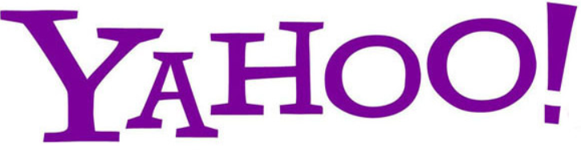
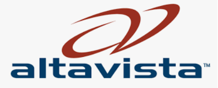
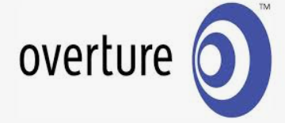
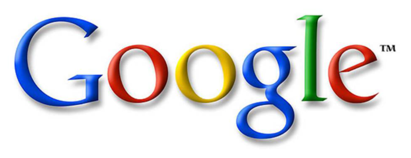

Web Search Engines
Even before the World Wide Web, there were search engines that attempted to organize
the Internet. The first of these was the Archie search engine from McGill University in
1990, followed in 1991 by WAIS and Gopher. All three of those systems predated the invention
of the World Wide Web but all continued to index the Web and the rest of the Internet for
several years after the Web appeared. There are still Gopher servers as of 2006, although
there are a great many more web servers.
As the Web grew, search engines and Web directories were created to track pages on the Web and
allow people to find things. The first full-text Web search engine was WebCrawler in 1994.
Before WebCrawler, only Web page titles were searched. Another early search engine, Lycos,
was created in 1993 as a university project, and was the first to achieve commercial success.
During the late 1990s, both Web directories and Web search engines were popular—Yahoo!
(founded 1994) and Altavista (founded 1995) were the respective industry leaders. By August 2001,
the directory model had begun to give way to search engines, tracking the rise of Google (founded 1998),
which had developed new approaches to relevancy ranking. Directory features, while still commonly available,
became after-thoughts to search engines.

Yahoo (1994; reborn 2002)
While studying at Stanford in 1994, Yang and David Filo co-created an Internet website called "Jerry and
David's Guide to the World Wide Web," which consisted of a directory of other websites. As it grew in
popularity, they renamed it "Yahoo! Inc."
Yahoo! received around 100,000 unique visitors by the fall of 1994. Despite all the changes in the search
space over the years, Yahoo has remained one of the most popular search destinations on the web.
Yahoo stood out from its early competitors by using humans to catalog the web, a directory system.
Crawler-based results from its partners only kicked in if there were no human-powered matches. That made
Yahoo more relevant than competitors for many years, until the Google-era ushered in crawler-based results
that were both comprehensive and highly relevant.
Yahoo caught up with that era in October 2002, when it dropped its human-powered results in preference to
Google’s results. The Yahoo Directory still exists and is leveraged by the company, but today’s Yahoo is a
far different creature than what it was for all those years before.
Excite (1995; reborn 2001)
Created by six Stanford undergrads. Quickly gaining popularity after launching in late 1995, Excite crawled
the web to gather listings.
In 1996, the company bought two rivals, Magellan and WebCrawler, then itself was transformed via a merger
into Excite@Home.
Excite stopped gathering its own listings in December 2001, in the wake of its parent company’s bankruptcy.
Now a new “Excite Networks” company owns the Excite web site, while Infospace has a license to provide meta
search results to Excite in perpetuity.

AltaVista (1995)
The Google of its day, AltaVista offered access to a huge index of web sites, when it launched in December
1995.
he search engine quickly grew in popularity, but its parent Digital didn’t know what to do with it. The sale
of Digital to Compaq didn’t help matters, and the situation grew worse when AltaVista was spun into a
separate company, majority-owned by CMGI.
It was relaunched as a portal in October 1999, entering an already crowded field and taking its attention
away from the quality of its search results. It paid the price as dissatisfied users flocked to newcomer
Google.
Throughout everything, AltaVista’s crawler has kept going. Overture now intends to buy the company.

Overture (1998)
Formerly known as GoTo, the company launched a “paid placement” service in early 1998, where sites
were ranked based in order of how much they were willing to pay.
The web had matured enough by this point to accept this type of commercialization: similar plans tried by
Open Text in 1996 were dropped after a chorus of complaints.
By 2000, Overture abandoned its initial route of driving consumers to its own web site in favor of a network
model of providing its paid listings to other sites. Today, it powers paid listings to major search engines
such as MSN and Yahoo.

Google (1998)
Ironically, Google is now the oldest of the “new” players that have taken over from the old.
Larry and Sergey began working on BackRub, a search engine which utlized backlinks for search. Launched in
1998 as a Stanford University research project, Google’s ability to analyze links from across the web helped
it produce a new generation of highly relevant, crawler-based results. By many different measures, it is
today the most popular search engine in use.
Google's "Knowledge Panel" this is how information from the Knowledge Graph is presented to users. Database
size, which had been a significant marketing feature through the early 2000s, was similarly displaced by
emphasis on relevancy ranking, the methods by which search engines attempt to sort the best results first.
Relevancy ranking first became a major issue circa 1996, when it became apparent that it was impractical to
review full lists of results. Consequently, algorithms for relevancy ranking have continuously improved.
Google's PageRank method for ordering the results has received the most press, but all major search engines
continually refine their ranking methodologies with a view toward improving the ordering of results.
As of 2006, search engine rankings are more important than ever, so much so that an industry has developed
("search engine optimizers", or "SEO") to help web-developers improve their search ranking, and an entire
body of case law has developed around matters that affect search engine rankings, such as use of trademarks
in metatags. The sale of search rankings by some search engines has also created controversy among
librarians and consumer advocates.
Today, Google has made strides to transform the search engine experience for users. With Google's addition
of the Google Knowledge Graph, there has been a significant effect on the internet as a whole, possibly even
limiting certain websites traffic, including Wikipedia. By pulling information from Wikipedia and presenting
it on Google's page, some argue that it can negatively affect Wikipedia and other sites. However, there have
been no immediate concerns between Wikipedia and the Knowledge Graph.
Bing
On June 3, 2009, Microsoft launched its new search engine, Bing. The following month Microsoft and Yahoo!
announced a deal in which Bing would power Yahoo! Search.
Internet01
main